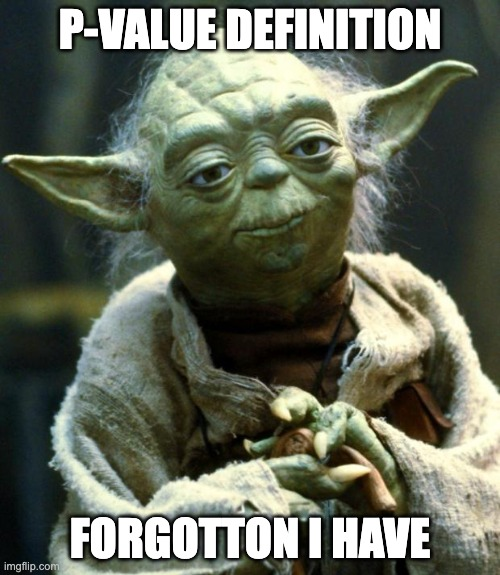
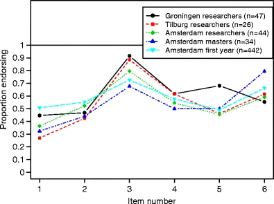

flowchart TD
A{Goals} --> B(describe)
A --> C(predict)
A --> D(explain)
B --> E(distribution)
B --> F(assocation)
B --> G(extrapolation)
C --> H(point estimate)
C --> I(interval)
D --> J(causal inference)
D --> K(population)
D --> L(latent construct)
2 Inferenz

2.1 Lernsteuerung
2.1.1 Position im Modulverlauf
Abbildung 1.1 gibt einen Überblick zum aktuellen Standort im Modulverlauf.
2.1.2 Lernziele
Nach Absolvieren des jeweiligen Kapitels sollen folgende Lernziele erreicht sein.
Sie können …
- die Definition von Inferenzstatistik sowie Beispiele für inferenzstatistische Fragestellungen nennen
- zentrale Begriffe der Inferenzstatistik nennen und in Grundzügen erklären
- den Nutzen von Inferenzstatistik nennen
- erläutern, in welchem Zusammenhang Ungewissheit zur Inferenzstatistik steht
- anhand von Beispielen erklären, was ein statistisches Modell ist
- die Grundkonzepte der Regression angeben
- Unterschiede zwischen frequentistischer (“klassischer”) und Bayes-Inferenz benennen
- Vor- und Nachteile der frequentistischen vs. Bayes-Inferenz diskutieren
- Die grundlegende Herangehensweise zur Berechnung des p-Werts informell erklären
2.1.3 Begleitliteratur
Bei Gelman, Hill, und Vehtari (2021), Kap. 1 findet sich eine Darstellung ähnlich zu der in diesem Kapitel.
2.1.4 Vorbereitung im Eigenstudium
- Statistik 1, Kap. “Rahmen”
- Statistik 1, dort alle Inhalte zum Thema “Modellieren” und “Regression”
2.1.5 Begleitvideos
2.1.6 Wozu ist Statistik überhaupt da?
📺 Ja, wozu ist Statistik eigentlich da?
Ja, diese Frage haben Sie sich auch schon mal gestellt? Abb. Abbildung 2.1 gibt einen Überblick über die Ziele der Statistik.1 Nach dieser Einteilung lassen sich drei Arten von Zielen unterscheiden: Beschreiben, Vorhersagen und Erklären.
Beispiel 2.1 (Beispiele für die Zielarten statistischer Analysen)
- Beschreiben: “Wie groß ist der Gender-Paygap in der Branche X im Zeitraum Y?”
- Vorhersagen: Wenn eine Person, Mr. X, 100 Stunden auf die Statistikklausur lernen, welche Note kann diese Person dann erwarten?
- Erklären: Wie viel bringt (mir) das Lernen auf die Statistikklausur?\(\square\)
Für die Wissenschaft ist Erklären das wichtigste Ziel. Bei wenig beackerten Wissenschaftsfeldern ist das Beschreiben ein sinnvoller erster Schritt, der allerdings nicht Stolperfallen ist, wie in Kapitel 11 erläutert. Vorhersagen ist mehr für die Praxis als für die Wissenschaft relevant.2
2.2 Was ist Inferenz?
Statistische Inferenz hat zum Ziel, vom Teil aufs Ganze zu schließen, bzw. vom Konkreten auf das Abstrakte.3
Typischerweise untersuchen im Rahmen einer statistischen Analyse eine Stichprobe, wie z. B. Ihr Freundeskreis, der leichtsinnig genug war, auf Ihre WhatsApp-Nachricht “Tolle Studie zu dem Geheimnis des Glücks!!!” zu klicken. Ihr Freundeskreis ist ein Teil der Menschen (z. B. aus Deutschland), also eine Stichprobe. Schauen wir uns den Unterschied zwischen Stichprobe und Population näher an.
2.3 Stichprobe vs. Population
Nehmen wir an, wir möchten herausfinden, wie groß der Anteil der R-Fans in der Population der Studierenden ist. Den Anteil der F-Fans bezeichnen wir der Einfachheit halber hier mit A4.
Das Grundproblem der Inferenzstatistik ist, dass wir an Aussagen zur Grundgesamtheit interessiert sind, aber nur eine Stichprobe, also einen Ausschnitt oder eine Teilmenge der Grundgesamtheit (synonym: Population) vorliegen haben.
Wir müssen also den Anteil der R-Fans in der Population auf Basis des Anteils in der Stichprobe schließen: Wir verallgemeinern oder generalisieren von der Stichprobe auf die Grundgesamtheit, s. Abb. Abbildung 2.2 und Abbildung 2.3.


Population vs. Sample. Autor: Karsten Lübke. OEM
Häufig ist das praktische Vorgehen recht simpel: Ah, in unserer Stichprobe sind 42% R-Fans!5. Man schreibt gerne: \(p = 0.42\) (p wie proportion). Die Stichprobe sei repräsentativ für die Grundgesamtheit aller Studierender. Messerscharf schließen wir: In der Grundgesamtheit ist der Anteil der R-Fans auch 42%, \(\pi=0.42\).
Hinweis
Wir verwenden lateinische Buchstaben (p), um Kennzahlen einer Stichprobe zu benennen, und griechische (\(\pi\)) für Populationen.\(\square\)
2.3.1 Deskriptiv- vs. Inferenzstatistik
Statistik gibt es in zwei Geschmacksrichtungen, könnte man sagen: Deskriptiv- und Inferenzstatistik, s. Abb. Abbildung 2.4.
Vereinfacht gesprochen fasst die Deskriptivstatistik Daten (einer Stichprobe) zu einer einzelnen Kennzahl zusammen.
Beispiel 2.2 In einem Hörsaal sitzen 100 Studis. Alle schreiben Ihre Körpergröße auf einen Zettel. Die Dozentin sammelt die Zettel ein und rechnet dann den Mittelwert der Körpergröße der anwesenden Studentis aus. Voilà: Deskriptive Statistik!\(\square\)

Übungsaufgabe 2.1 🏋 Schließen Sie die Augen und zeichnen Sie obiges Diagramm, Abbildung 2.4!\(\square\)
Definition 2.1 (Deskriptivstatistik) Deskriptivstastistik fasst Stichprobenmerkmale zu Kennzahlen (Statistiken) zusammen.
2.3.2 Inferenzstatistik
Inferenzstatistik ist ein Verfahren zum Schließen von Statistiken (Kennzahl einer Grundgesamtheit) auf Parameter (eine Kennzahl einer Grundgesamtheit).
Inferenz bedeutet Schließen; auf Basis von vorliegenden Wissen wird neues Wissen generiert.
Inferenzstatistik ist ein Verfahren, das mathematische Modelle (oft aus der Stochastik) verwendet, um ausgehend von einer bestimmten Datenlage, die eine Stichprobe einer Grundgesamtheit darstellt, allgemeine Schlüsse zu ziehen.
Übungsaufgabe 2.2 🏋️️ Heute Nacht vor dem Schlafen wiederholen Sie die Definition. Üben Sie jetzt schon mal.\(\square\)
2.3.3 Deskriptiv- und Inferenzstatistik gehen Hand in Hand
Für jede beliebige Statistik (Kennzahl von Stichprobendaten) kann man die Methoden der Inferenzstatistik verwenden, um den zugehörigen Kennwert (Parameter) der Population zu bestimmen, s. Tabelle Tabelle 2.1. Da man die Parameter der Population so gut wie nie sicher kennt (schließlich hat man meist nur Auszüge, Teile der Population, also Stichproben), muss man sich mit Schätzwerten begnügen. Schätzwerte macht man kenntlich mit einem “Dach-Zeichen” über dem Parameter, also z.b. \(\hat{\mu}\), lies: “mü-Dach”.
| Kennwert | Stichprobe | Grundgesamtheit (Aussprache) | Schätzwert |
|---|---|---|---|
| Mittelwert | \(\bar{X}\) | \(\mu\) (mü) | \(\hat{\mu}\) |
| Streuung | \(sd\) | \(\sigma\) (sigma) | \(\hat{\sigma}\) |
| Anteil | \(p\) | \(\pi\) (pi) | \(\hat{\pi}\) |
| Korrelation | \(r\) | \(\rho\) (rho) | \(\hat{\rho}\) |
| Regression | \(b\) | \(\beta\) (beta) | \(\hat{\beta}\) |
Für Statistiken (Daten einer Stichprobe) verwendet man lateinische Buchstaben; für Parameter (Population) verwendet man griechische Buchstaben.
Übungsaufgabe 2.3 🏋️ Geben Sie die griechischen Buchstaben für typische Statistiken an. Ohne auf die Tabelle zu schauen.😜\(\square\)!
2.3.4 Schätzen von Parametern einer Grundgesamtheit
Meist begnügt man sich beim Analysieren von Daten nicht mit Aussagen für eine Stichprobe, sondern will auf eine Grundgesamtheit verallgemeinern.
Leider sind die Parameter einer Grundgesamtheit zumeist unbekannt, daher muss man sich mit Schätzungen begnügen.
Schätzwerte werden mit einem “Dach” über dem Kennwert gekennzeichnet, s. letzte Spalte in Tabelle 2.1.
In der angewandten Forschung interessieren häufig Fragen wie: “Welche Entscheidung ist (wahrscheinlich) besser?”. Da bekanntlich (fast) keine Aussagen sicher sind, spielt Wahrscheinlichkeit eine wichtige Rolle in den Forschungsfragen bzw. in deren Antworten.
Hinweis
Wahrscheinlichkeit wird oft mit Pr oder p abgekürzt, für engl. probability.\(\square\)
Beispiel 2.3 Sie testen zwei Varianten Ihres Webshops (V1 und V2), die sich im Farbschema unterscheiden und ansonsten identisch sind: Hat das Farbschema einen Einfluss auf den Umsatz?
Dazu vergleichen Sie den mittleren Umsatz pro Tag von V1 vs. V2, \(\bar{X}_{V1}\) und \(\bar{X}_{V2}\). Die Mittelwerte unterscheiden sich etwas, \(\bar{X}_{V1} > \bar{X}_{V2}\). Sind diese Unterschiede “zufällig” oder “substanziell”? Gilt also \(\mu_{V1} > \mu_{V2}\) oder gilt \(\mu_{V1} \le \mu_{V2}\)? Wie groß ist die Wahrscheinlichkeit\(Pr(\mu_{V1} > \mu_{V2})\)?
Übungsaufgabe 2.4 🏋️ VERTIEFUNG Predictive Maintenance ist ein Anwendungsfeld inferenzstatistischer Modellierung. Lesen Sie dazu S. 3 dieses Berichts!\(\square\)
2.4 Modellieren
2.4.1 Modellieren als Grundraster des Erkennens
In der Wissenschaft – wie auch oft in der Technik, Wirtschaft oder im Alltag – betrachtet man einen Teil der Welt näher, meist mit dem Ziel, eine Entscheidung zu treffen, was man tun wird oder mit dem Ziel, etwas zu lernen.
Nun ist die Welt ein weites Feld. Jedes Detail zu berücksichtigen ist nicht möglich. Wir müssen die Sache vereinfachen: Alle Informationen ausblenden, die nicht zwingend nötig sind. Aber gleichzeitig die Strukturelemente der wirklichen Welt, die für unsere Fragestellung zentral ist, beibehalten.
Dieses Tun nennt man Modellieren: Man erstellt sich ein Modell.
Definition 2.2 (Modell) Ein Modell ist ein vereinfachtes Abbild der Wirklichkeit.\(\square\)
Der Nutzen eines Modells ist, einen (übermäßig) komplexen Sachverhalt zu vereinfachen oder überhaupt erst handhabbar zu machen. Man versucht zu vereinfachen, ohne Wesentliches wegzulassen. Der Speck muss weg, sozusagen. Das Wesentliche bleibt.
Auf die Statistik bezogen heißt das, dass man einen Datensatz dabei so zusammenfasst, damit man das Wesentliche erkennt. Was ist das “Wesentliche”? Oft interessiert man sich für die Ursachen eines Phänomens. Etwa: “Wie kommt es bloß, dass ich ohne zu lernen die Klausur so gut bestanden habe?”6 Noch allgemeiner ist man dabei häufig am Zusammenhang von X und Y interessiert, s. Abbildung 2.5, die ein Sinnbild von statistischen Modellen widergibt.
flowchart LR X --> Y X1 --> Y2 X2 --> Y2
Man kann Abbildung 2.5 als ein Sinnbild einer (mathematischen) Funktion lesen.
Definition 2.3 (Funktion) Eine Funktion \(f\) setzt zwei Größen in Beziehung. \(\square\)
In Mathe-Sprech:
\(f: X \rightarrow Y\)
oder:
\(y = f(x)\), lies: “Y ist eine Funktion von X”.
Es hört sich zugspitzt an, aber eigentlich ist fast alles Modellieren: Wenn man den Anteil der R-Fans in einer Gruppe Studierender ausrechnet, macht man sich ein Modell: man vereinfacht diesen Ausschnitt der Wirklichkeit anhand einer statistischen Kennzahl, die das forschungsleitende Interesse zusammenfasst.
2.4.2 Vertiefung
Lesen Sie die Einführung zum Thema Modellieren bei Poldrack (2022) (Kap. 5.1).
Hinweis
Nutzen Sie die Übersetzungsfunktion Ihres Browsers, wenn Sie einen englischen Text lieber auf Deutsch lesen wollen. Oder einen deutschen lieber auf Englisch.
2.5 Regression
Einflussreiche Leute schwören auf die Regressionsanalyse (Abbildung 2.6).

Abbildung 2.7 zeigt ein interaktives Beispiel einer linearen Funktion. Sie können Punkte per Klick/Touch hinzufügen.
Alternativ können Sie diese App njutzen, Regressionskoeffizienten, Steigung (slope) und Achsenabschnitt (Intercept), zu optimieren. Dabei meint “optimieren”, die Abweichungen (Residuen, Residualfehler; die roten Balken in der App) zu minimieren.7
Hier finden Sie eine App, die Ihnen gestattet, selber Hand an eine Regressionsgerade zu legen.
Übungsaufgabe 2.5 (VERTIEFUNG Regression mit Animationen erklärt) Lesen Sie diesen Post, der Ihnen mit Hilfe von Bildern und Animationen (okay, und etwas) Text die Grundlagen der Regressionsanalyse erklärt.\(\square\)
2.5.1 Regression zum Modellieren
Die Regression ist eine Art Schweizer Taschenmesser der Statistik: Für vieles gut einsetzbar. Anstelle von vielen verschiedenen Verfahren des statistischen Modellierens kann man (fast) immer die Regression verwenden. Das ist nicht nur einfacher, sondern auch schöner. Wir werden im Folgenden stets die Regression zum Modellieren verwenden. Dann wenden wir die Methoden der Inferenz auf die Kennzahlen der Regression an.
Hinweis
Regression + Inferenz = 💖
Alternativ zur Regression könnte man sich in den Wald der statistischen Verfahren begeben, wie hier von der Uni Münster als Ausschnitt (!) aufgeführt. Auf dieser Basis kann man meditieren, welches statistischen Verfahren man für eine bestimmte Fragestellung verwenden sollte, s. Abb. Abbildung 2.8. Muss man aber nicht – man kann stattdessen die Regression benutzen.

Hinweis
Es ist meist einfacher und nützlicher, die Regression zu verwenden, anstelle der Vielzahl von anderen Verfahren (die zumeist Spezialfälle der Regression sind). In diesem Kurs werden wir für alle Fragestellungen die Regression verwenden.8\(\square\)
2.5.2 In voller Pracht
Hier ist die Regressionsgleichung in voller Pracht; s. Abbildung 2.9. Links sieht man eine einfache Regression mit hp als Prädiktor (X, unabhängige Variable) und mpg als abhängige Variable (Y). Das rechte Teildiagramm zeigt eine multiple Regression mit den Prädiktoren hp und am.9
Im einfachsten Fall sind die vom Modell vorhergesagten (geschätzten) Werte, \(\hat{y}\), durch eine einfache Gerade beschrieben, s. Abbildung 2.9, links. Eine Gerade lässt sich durch folgende Formel beschreiben: \(\hat{y} = \beta_0 + \beta_1\). Dabei ist \(\beta_0\) der Achsenabschnitt (eng. intercept) und \(\beta_1\) die Steigung der Regressiongeraden.
In allgemeiner Form schreibt man die Regressionsgleichung so, s. Gleichung 2.1
\[y = \beta_0 + \beta_1 x_1 + \ldots + \beta_k x_k + \epsilon \tag{2.1}\]
Man nennt alle \(\beta_0, \beta_1, \beta_2, ...\) die Koeffizienten, Regressionsgewichte oder Parameter des Modells (Gelman, Hill, und Vehtari 2021).
Anhand von Gleichung 2.1 erkennt man auch, warum man von einem linearen Modell spricht: Y wird als gewichteter Mittelwert mehrerer Summanden (\(X_1, X_2, ...\)) berechnet.


2.6 Unsicherheit
2.6.1 Inferenz beinhaltet Ungewissheit
Inferenzstatistische Schlüsse sind mit Unsicherheit (Ungewissheit) behaftet: Schließlich kennt man nur einen Teil (die Stichprobe) eines Ganzen (die Population), möchte aber vom Teil auf das Ganze schließen.
Wichtig
Nichts Genaues weiß man nicht: Schließt man von einem Teil auf das Ganze, so geschieht das unter Unsicherheit. Man spricht von Ungewissheit, da man die Unsicherheit das Wissen über die Genauigkeit des Schließens betrifft.
Schließt man etwa, dass in einer Grundgesamtheit der Anteil der R-Fans bei 42% liegt, so geschieht das unter Unsicherheit; es ist ungewiss. Man ist sich nicht sicher, dass es wirklich 42% in der Population sind - und nicht etwa etwas mehr oder etwas weniger. Schließlich hat man nicht die ganze Population gesehen bzw. vermessen. Sicher ist man sich hingegen für die Stichprobe (Messfehler einmal ausgeblendet). Zur Bemessung der Unsicherheit (Ungewissheit) bedient man sich der Wahrscheinlichkeitsrechnung (wo immer möglich). Die Wahrscheinlichkeitstheorie bzw. -rechnung wird daher auch als die Mathematik des Zufalls bezeichnet.
Definition 2.4 (Zufälliges Ereignis) Unter einem zufälligen (engl. random) Ereignis verstehen wir ein Ereignis, das nicht (komplett) vorherzusehen ist, wie etwa die Augenzahl Ihres nächsten Würfelwurfs. Zufällig bedeutet nicht (zwangsläufig), dass das Ereignisse keine Ursachen besitzt. So gehorchen die Bewegungen eines Würfels den Gesetzen der Physik, nur sind uns diese oder die genauen Randbedingungen nicht (ausreichend) bekannt.
Übungsaufgabe 2.6 🏋 Welche physikalischen Randbedingungen wirken wohl auf einen Münzwurf ein?\(\square\)
Beispiel 2.4 (Beispiele zur Quantifizierung von Ungewissheit) Aussagen mit Unsicherheit können unterschiedlich präzise formuliert sein.
Morgen regnet’s \(\Leftrightarrow\) Morgen wird es hier mehr als 0 mm Niederschlag geben (\(p=97\%\)).
Methode \(A\) ist besser als Methode \(B\) \(\Leftrightarrow\) Mit einer Wahrscheinlichkeit von 57% ist der Mittelwert von \(Y\) für Methode \(A\) höher als für Methode \(B\).
Die Maschine fällt demnächst aus \(\Leftrightarrow\) Mit einer Wahrscheinlichkeit von 97% wird die Maschine in den nächsten 1-3 Tagen ausfallen, laut unserem Modell.
Die Investition lohnt sich \(\Leftrightarrow\) Die Investition hat einen Erwartungswert von 42 Euro; mit 90% Wahrscheinlichkeit wird der Gewinn zwischen -10000 und 100 Euro.
Übungsaufgabe 2.7 🏋 Geben Sie weitere Beispiele an!
2.6.2 Wahrscheinlichkeit
Die Wahrscheinlichkeitsrechnung ist die typische Methode, um Ungewissheit zu präzisieren, d.h. zu quantifizieren.
Definition 2.5 (Wahrscheinlichkeit) Die Wahrscheinlichkeit ist ein Maß dafür, für wie sicher jemand es hält, dass ein Ereignis eintritt. Die Wahrscheinlichkeit eines Ereignisses wird als Zahl zwischen 0 und 1 angegeben, wobei 0 bedeutet, dass das Ereignis als unmöglich angesehen wird, und 1 bedeutet, dass das Ereignis als sicher betrachtet wird. \(\square\)
2.6.3 Zwei Arten von Ungewissheit
Im Modellieren im Allgemeinen und in Regressionsmodellen im Besonderen lassen sich (mindestens) zwei Arten von Ungewissheiten angeben, s. auch Abb. Abbildung 2.10.
Wie (un)gewiss ist man sich über die Regressionsgewichte?
Wie (un)gewiss ist man sich über die Genauigkeit der Vorhersage (des Modells)?
flowchart LR X1 -->|Werte von Steigung und Achsenabschnitt?|B X2 -. Genauigkeit des Modells .-> B
2.6.3.1 Ungewissheit der Modellkoeffizienten
Wie man in Abbildung 2.11 sieht, können sich die Koeffizienten (Achsenabschnitt und Steigung) unterscheiden. Woran liegt das?
Beispiel 2.5 (Stichproben der New Yorker Flüge) Nehmen wir an, wir ziehen ein paar Zufallstichproben aus der Menge (Population) aller Flüge, die in New York im Jahre 2013 gestartet sind. In jeder Stichprobe berechnen wir eine Regression zwischen Flugzeit und Verspätung des Flugs am Ankunftsort. Sicherlich werden sich die Stichproben in ihren Kennwerten, z. B. in den Koeffizienten der genannten Regression, unterscheiden.\(\square\)
library(nycflights13)
data(flights)
stipro1 <- sample_n(flights, size = 100)
stipro2 <- sample_n(flights, size = 100)
stipro3 <- sample_n(flights, size = 100)


Der Grund für die Schwankungen der Modellparameter zwischen den Stichproben ist die Zufälligkeit des Stichprobenziehens. Je nachdem, wie es der Zufall (oder sonst wer) will, landen bestimmte Fälle (Flüge in unserem Beispiel) in unserer Stichprobe. Zumeist unterscheiden sich die Stichproben; theoretisch könnten sie aber auch rein zufällig gleich sein.
Wichtig
Stichproben-Kennwerte schwanken um den tatsächlichen Wert in der Population herum.\(\square\)
Um diese Ungewissheit, die sich in den Schwankungen der Stichproben-Regressionskoeffizienten ausdrückt, anzuzeigen, ist ein “grauer Schleier” um die Regressionsgeraden in Abbildung 2.11 gekennzeichnet. Dieser grauer Schleier gibt also eine Spannbreite anderer, plausibler Ergebnisse an, die sich in einer anderen Stichprobe auch manifestieren könnten.
2.6.3.2 Ungewissheit der Modellgüte
Angenommen, wir sind uns sicher über die Werte der Modellparameter, also über die Lage der Regressionsgeraden, anschaulich gesprochen. Dann bliebe immer noch Ungewissheit zur Modellgüte. Ein bestimmtes Modell kann genau oder ungenaue Vorhersagen abgeben; das ist die zweite Art der Ungewissheit.
Diese Art der Ungewissheit ist nicht von Interesse, wenn man nur an Modellkoeffizienten interessiert ist. Sie ist dann interessant, wenn man für einzelne Fälle eine Vorherage macht und sich fragt, wie zuverlässig diese Vorhersage ist.


2.6.4 Ich weiß, was ich nicht weiß: Ungewissheit angeben
Streng genommen ist eine Inferenz ohne Angabe der Ungewissheit (Genauigkeit der Schätzung) wertlos. Angenommen, jemand sagt, dass sie den Anteil der R-Fans (in der Population) auf 42% schätzt, lässt aber offen wie sicher (präzise) die Schätzung (der Modellparameter) ist. Wir wissen also nicht, ob z. B. 2% oder 82% noch erwartbar sind. Oder ob man im Gegenteil mit hoher Sicherheit sagen kann, die Schätzung schließt sogar 41% oder 43% aus.
Wichtig
Schließt man auf eine Population, schätzt also die Modellparameter, so sollte stets die (Un-)Genauigkeit der Schätzung, also die Ungewissheit des Modells, angegeben sein.\(\square\)
Im Rahmen der Regressionsanalyse schlägt sich die Ungewissheit an zwei Stellen nieder:
- zur Lage der Regressionsgeraden, \(\beta_0\), \(\beta_1\)
- zur Modellgüte bzw. zum Vorhersagefehler, \(\sigma\) 10
2.6.5 Visualisierung von Ungewissheit
Definition 2.6 (Punktschätzer) Gibt man nur einen Punktwert an, wie 42%, als Ergebnis einer Inferenz, spricht man von einem Punktschätzer.
Punktschätzer beinhalten keine Angabe der Schätz(un)genauigkeit, s. Abb. Abbildung 2.13, links. Rot markiert: Die Punktschätzung von mpg für hp=200.
In Abb. Abbildung 2.13, links, ist die Ungewissheit in den Regressionskoeffizienten visualisiert: Wie sicher sind wir uns bzgl. der Lage der Regressionskoeffizienten? Vgl. Definition 2.6.
Auch wenn wir uns sicher wären im Hinblick auf die Regressionsgewichte in Abb. Abbildung 2.13, links, bliebe Ungewissheit bei der Vorhersage des Bereichs plausibler Werte für individuelle Vorhersagen, s. Abbildung 2.13, rechts. Unsere Schätzungen wären auch dann nicht sicher, nicht fehlerfrei, wenn wir den genauen Verlauf der Regressiongerade sicher wüssten. Das liegt daran, da das Modell nicht alle Einflüsse auf Y berücksichtigt, sondern nur einen einzigen, hier als X bezeichnet. Das Modell hat also keine perfekte Information, es ist ungewiss über alle möglichen Einflussfaktoren auf Y. Wüsste unser Modell alle Einflussfaktoren genau, so wäre unser Vorhersageintervall sehr schmal (bzw. hätte null Breite).
In Abb. Abbildung 2.13, rechts, ist nicht nur die Ungewissheit durch die Regressionsgewichte, sondern auch die Ungewissheit zur Vorhersage der Y-Werte individueller Beobachtungen dargestellt. In diesem Fall spricht man von einem “Vorhersageintervall”, da man nicht nur von “typischen Fällen” auf der Regressiongeraden spricht, sondern für echte Fälle Vorhersagen (Schätzungen) tätigt, wo auch die Ungewissheit der Modellgüte relevant ist.


Abbildung 2.13 zeigt auch, dass für eine Beobachtung mit hp=200 der Punktschätzer der geschätzte Wert von mpg bei ca 16.5 liegt. Das ist sozusagen unser Best Guess. Weiterhin ist (in grün) das Vorhersageintervall für hp=200 angezeigt. Für Beobachtungen mit hp=200 liegt der Bereich plausibler mpg-Werte in dem (grün) markierten Bereich (ca. 8 bis 25).
Definition 2.7 (Vorhersageintervall) Ein Vorhersageintervall zeigt den Bereich plausibler Werte (laut unserer Analyse) für eine Beobachtung mit bestimmten Prädiktor-Werten.\(\square\)
Wie man sieht, wird die Ungewissheit größer, wenn man beide Arten der Ungewissheit berücksichtigt. Das Vorhersage-Intervall berücksichtigt Ungewissheit in \(\beta_0, \beta_1, \epsilon\) bei der Vorhersage von \(\hat{y_i}\).
Übungsaufgabe 2.8 🏋 Geben Sie ein vergleichbares Beispiel an!
2.6.6 Konfidenzintervall
Wir sehen in Abbildung 2.13, dass ein “Ungewissheitskorridor” angegeben wird für die Lage der Regressionsgerade (linkes Teildiagramm) bzw. für den Bereich plausibler Vorhersagen im konkreten Fall einer Beobachtung mit bestimmten X-Wert. Entsprechend wird nicht ein Punktschätzer, sondern ein Schätzbereich angegeben. Man spricht auch von einem Konfidenzintervall oder Unsicherheitsbereich.11
Definition 2.8 (Konfidenzintervall) Ein Konfidenzintervall (confidence intervall, CI) ist ein Oberbegriff für Schätzbereiche. Die Grenzen eines Konfindenzintervall markieren einen Bereich plausibler Werte für einen Parameter.
Es gibt verschiedene Arten, Konfidenzintervalle zu berechnen; wir sprechen in späteren Kapiteln dazu ausführlicher. Ein Konfidenzintervall wird häufig mit 90% oder 95% Genauigkeit angegeben. Im Kontext der Bayes-Analyse - auf der dieser Kurs aufbaut - ist ein Konfidenzintervall einfach zu interpretieren. Sagen wir, wir finden, dass in einem Modell ein 95%-Konfidenzintervall für den Anteil der R-Fans angegeben wird, dass sich von 40 bis 44 Prozent erstreckt. Dieser Befund lässt sich so interpretieren: “Laut Modell liegt der gesuchte Anteil der R-Fans mit einer Wahrscheinlichkeit von 95% im Bereich von 44 bis 44 Prozentpunkten.” Diese (einfache) Interpretation ist im Frequentismus nicht möglich.
Beispiel 2.6 Geben Sie Beispiele für Konfidenzintervalle an.
2.7 Frequentismus vs. Bayes-Inferenz
2.7.1 Frequentismus: Klassische Inferenz
- Die Berücksichtigung von Vorwissen zum Sachgegenstand wird vom Frequentismus als subjektiv zurückgewiesen.
- Nur die Daten selber fliesen in die Ergebnisse ein, keine Vorannahmen.
- Wahrscheinlichkeit wird über relative Häufigkeiten definiert.
- Es ist nicht möglich, die Wahrscheinlichkeit einer Hypothese bzw. eines Werts in der Population (eines Parameters) anzugeben.
- Stattdessen wird angegeben, wie häufig eine vergleichbare Datenlage zu erwarten ist, wenn der Versuch sehr häufig wiederholt ist.
- Ein Großteil der Forschung (in den Sozialwissenschaften) verwendet (aktuell) diesen Ansatz.
2.7.2 Bayesianische Inferenz
- Vorwissen (Priori-Wissen) fließt explizit in die Analyse ein (zusammen mit den Daten).
- Wenn das Vorwissen gut ist, wird die Vorhersage durch das Vorwissen genauer, ansonsten ungenauer.
- Die Wahl des Vorwissens muss explizit (kritisierbar) sein.
- In der Bayes-Inferenz sind Wahrscheinlichkeitsaussagen für Hypothesen möglich.
- Die Bayes-Inferenz erfordert mitunter viel Rechenzeit und ist daher erst in den letzten Jahren (für gängige Computer) komfortabel geworden.
2.7.3 Frequentismus
2.7.3.1 Der p-Wert
Die zentrale Statistik des Frequentismus heißt der p-Wert
Der p-Wert ist so definiert, vgl. Wasserstein und Lazar (2016):
Wie wahrscheinlich ist der Wert der Teststatistik (oder noch extremere Werte), vorausgesetzt die Nullhypothese gilt und man wiederholt den Versuch unendlich oft (mit gleichen Bedingungen, aber zufällig verschieden und auf Basis unseres Modells)?
Findet man \(p<.05\) (oder einen anderen Prozentwert, aber meistens wird 5% hergenommen), so spricht man von “(statistischer) Signifikanz” und nimmt dies als Beleg, dass man einen Effekt gefunden hat, die Hypothese eines Nulleffekts (z. B. kein Zusammenhang von X und Y) also verwerfen kann. Faktisch entscheidet man sich, die Forschungshypothese weiterhin als “vorläufig gültig” oder zumindest als “nicht widerlegt” zu betrachten.
Übungsaufgabe 2.9 🏋 Recherchieren Sie eine Definition des p-Werts und lesen Sie sie einem Freund. Beobachten sie die Reaktionen auf ihre Erklärung.\(\square\)
Der p-Wert wird oft falsch verstanden (Badenes-Ribera u. a. 2016). Aber er ist auch nicht leicht zu verstehen, meint Meister Yoda, s. Abbildung 2.14. Hier sind einige FALSCHE Interpretationen zum p-Wert laut der Autoren:
- 🙅♀ Der p-Wert würde die Wahrscheinlichkeit der Nullhypothese oder der Forschungshypothese angeben. 🙊
- 🙅♀ Der p-Wert würde ein inhaltlich bedeutsames, praktisch signifikantes Ergebnis anzeigen. 🙊

2.7.3.2 Konfidenzintervalle
Die korrekte Definition der Konfidenzintervalls in frequentistischer Lesart lautet:
Der Konfidenzbereich, z. B. von 95%, repräsentiert den Anteil der Konfidenzintervalle bei sehr vielen (oder undentlich vielen) Wiederholungen des Experiments, die den echten Parameterwert enthalten (Hoekstra u. a. 2014).
Die folgende Visualisierung (Abbildung 2.15) zeigt das Prinzip frequentistischer Konfidenzintervalle: Auf Dauer enthalten 95% der Stichproben den wahren Wert (in der Population).
Wichtig
Ein frequentistisches Konfidenzintervall macht keine Aussage zur Wahrscheinlichkeit eines Werts in der Population (eines Parameters). Stattdessen wird eine Aussage über das Ergebnis einer sehr häufig wiederholten Stichprobenziehung berichtet. Ob ein bestimmtes (unseres, Ihres) den wahren Wert enthält, bzw. mit welcher Wahrscheinlichkeit es den wahren Wert enthält, darüber macht das frequentistische Konfidenzintervball keine Aussagen. \(\square\)
2.7.3.3 Aus der Forschung
Frequentistische Konfidenzintervalle werden oft falsch verstanden, wie die folgende Studie zeigt. Das liegt aber nicht daran, dass die Menschen zu dumm sind, sondern dass frequentistische Konfidenzintervalle für viele Menschen kontraintuitiv sind.
Hoekstra u. a. (2014) berichten von einer Studie, in der \(n=442\) Bachelor-Studentis, \(n=34\) Master-Studentis und \(n=120\) Forschende befragt wurden.
Den Versuchpersonen wurde folgender Fragebogen vorgelegt, s. Abbildung 2.16.

Kurz gesagt war die Frage, die die Befragten beantworten sollten:
In einem Experiment wird ein 95%-Konfidenzintervall mit dem Bereich von 0.1 bis 0.4 beichtet. Welcher der folgenden sechs Aussagen sind richtig bzw. falsch?
Mit “Konfidenzintervall” meinen die Forschenden ein frequentistisches Konfidenzintervall.
Alle diese sechs Aussagen sind FALSCH. Die Aussagen lauten:
Die Wahrscheinlichkeit, dass der wahre Mittelwert größer als 0 ist, beträgt mindestens 95 %.
Die Wahrscheinlichkeit, dass der wahre Mittelwert gleich 0 ist, ist kleiner als 5 %.
Die „Nullhypothese“, dass der wahre Mittelwert gleich 0 ist, ist wahrscheinlich falsch.
Es gibt eine 95%ige Wahrscheinlichkeit, dass der wahre Mittelwert zwischen 0,1 und 0,4 liegt.
Wir können mit 95%iger Sicherheit sagen, dass der wahre Mittelwert zwischen 0,1 und 0,4 liegt.
Wenn wir das Experiment immer wieder wiederholen würden, dann liegt der wahre Mittelwert in 95 % der Fälle zwischen 0,1 und 0,4.
Aussagen 1-4 weisen den Hypothesen bzw. den Parametern eine Wahrscheinlichkeit zu, was im Frequentismus nicht erlaubt ist. Aussagen 5-6 spezifizieren die Grenzen des Schätzintervalls, allerdings kann das Konfidenzintervall nur Aussagen zu den zugrundeliegenden Stichproben, nicht zum Schätzintervall, machen.
Die Ergebnisse zeigen, dass die Aussagen mehrheitlich falsch verstanden wurden, also mit “stimmt” angekreuzt wurden, s. Abbildung 2.17.

2.7.3.4 Bayes-Statistik
Die zentrale Statistik der Bayes-Statistik ist die Posteriori-Verteilung.
Die Posteriori-Verteilung beantwortet uns die Frage: “Wie wahrscheinlich ist die Forschungshypothese (oder Varianten von ihr), jetzt, nachdem wir die Daten kennen, auf Basis unseres Modells?”
In der Bayes-Statistik sind Aussagen folgender Art erlaubt:
Mit einer Wahrscheinlichkeit von 95% ist der neue Webshop besser als der alte. Mit einer Wahrscheinlichkeit von 89% liegt die Wirksamkeit des neuen Medikaments zwischen 0.1 und 0.4.
In diesem Post wird für Bayes geworben und (einseitig) Stellung pro Bayes bezogen.
2.7.4 Frequentist und Bayesianer
Im Cartoon 1132 von xkcd wird sich über das Nicht-Berücksichtigen von Vorab-Informationen (Prior-Verteilung) lustig gemacht, s. Abbildung 2.18.

2.7.5 Beispiel zum Nutzen von Apriori-Wissen 1
Ein Betrunkener behauptet, er könne hellsehen. Er wirft eine Münze 10 Mal und sagt jedes Mal korrekt vorher, welche Seite oben landen wird. Die Wahrscheinlichkeit dieses Ergebnisses ist sehr gering (\(2^{-10}\)) unter der Hypothese, dass die Münze fair ist, dass Ergebnis also “zufällig” ist, also \(p < .05\) und damit ist das Ergebnis “statistisch signifikant”.
Unser Vorwissen lässt uns allerdings trotzdem an der Hellsichtigkeit des Betrunkenen zweifeln, so dass die meisten von uns die Hypothese von der Zufälligkeit des Ergebnisses wohl nicht verwerfen.
2.7.6 Beispiel zum Nutzen von Apriori-Wissen 2
Eine Studie (Gelman, Hill, und Vehtari 2021) fand einen “großen Effekt” auf das Einkommen von Babies, die eine Stunde pro Woche während zwei Jahren an einem psychosozialen Entwicklungsprogramm teilnahmen (im Vergleich zu einer Kontrollgruppe), \(n=127\). Nach 20 Jahren war das mittlere Einkommen der Experimentalgruppe um 42% höher (als in der Kontrollgruppe) mit einem Konfidenzintervall von [+2%,+98%].
Allerdings lässt uns unser Vorwissen vermuten, dass so ein Treatment das Einkommen nach 20 Jahren kaum verdoppeln lässt. Wir würden den Effekt lieber in einem konservativeren Intervall schätzen (enger um Null).
2.8 Fazit
Wichtig
Kontinuierliches Lernen ist der Schlüssel zum Erfolg.
2.9 Aufgaben
2.10 —

Ziele existieren nicht “in echt” in der Welt. Wir denken sie uns aus. Ziele haben also keine ontologische Wirklichkeit, sie sind epistemologische Dinge (existieren nur in unserem Kopf). Das heißt, dass man sich nach Beliebem Ziele ausdenken kann. Allerdings hilft es, wenn man andere Menschen vom Nutzen der eigenen Ideen überzeugen kann…↩︎
Vielleicht hat Ihr Dozent Sie schon mal mit einem Prognosewettbewerb gequält? Ja? Genau! In einem Prognosewettbewerb ist das Ziel eine - natürlich möglichst exakte - Vorhersage zu treffen.↩︎
Statistische Inferenz sieht sich drei “Herausforderungen” gegenüber, laut Gelman, Hill, und Vehtari (2021), Kap. 1.1.; Diese betreffen das Schließen (oder Generalisieren) vom Einzelfall auf das Allgemeine: 1. Von der Stichprobe aus die Grundgesamtheit (Population), 2. Von der Experimental- auf die Kontrollgruppe (Kausalinferenz), 3. Von einem Messwert auf das zugrundeliegende Konstrukt. In diesem Kurs beschäftigen wir uns mit den ersten beiden Herausforderungen.↩︎
MeistensManchmal darf man bei der Statistik nicht nach einem tieferen Sinn suchen. Ist Statistik eine Art moderne Kunst?↩︎Manch einer hätte mit mehr gerechnet; andere mit weniger…↩︎
Das ist natürlich nur ein fiktives, komplett unrealistisches Beispiel, das auch unklaren Ursachen den Weg auf diese Seite gefunden hat.↩︎
Wie Jonas Kristoffer Lindeløv uns erklärt, sind viele statistische Verfahren, wie der sog. t-Test Spezialfälle der Regression.↩︎
Der Datensatz
mtcarswird gerne als Studienobjekt verwendet, da er einfach ist und für viele Beispiele geeignet. Wenn Sie sich einen Sachverhalt an einem einfachen Datensatz vergegenwärtigen wollen, bietet sich auch der Datensatzmtcarsan. Zudem ist er “fest in R eingebaut”; mitdata(mtcars)können Sie ihn verfügbar machen.↩︎\(\sigma\), das griechische s für Streuung (um die Regressionsgerade herum), manchmal wird auch e wie error verwendet↩︎
Tatsächlich gibt es mehrere Synonyme oder ähnliche Begriffe für Konfidenzintervall. Wir kommen später darauf detaillierter zu sprechen.↩︎